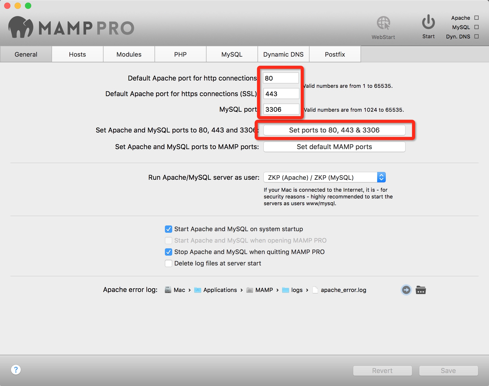
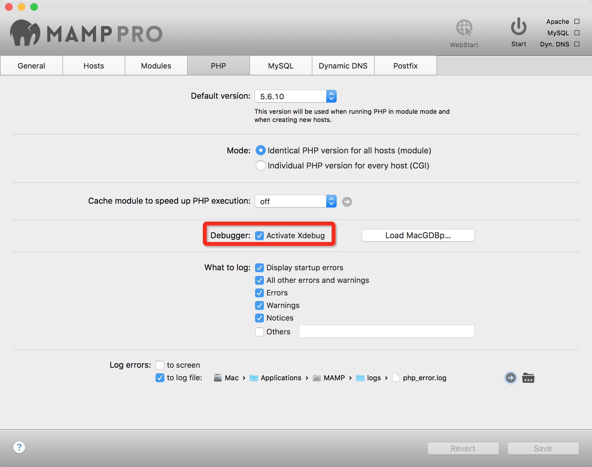
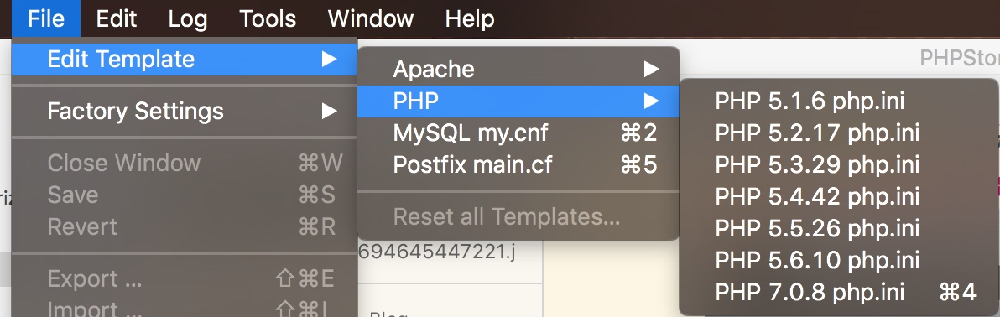
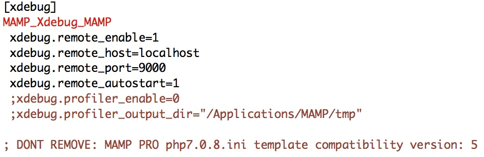
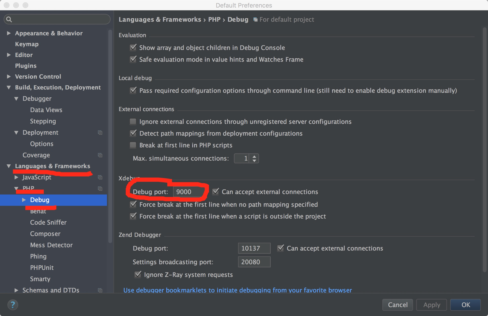
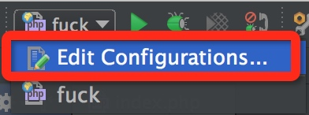
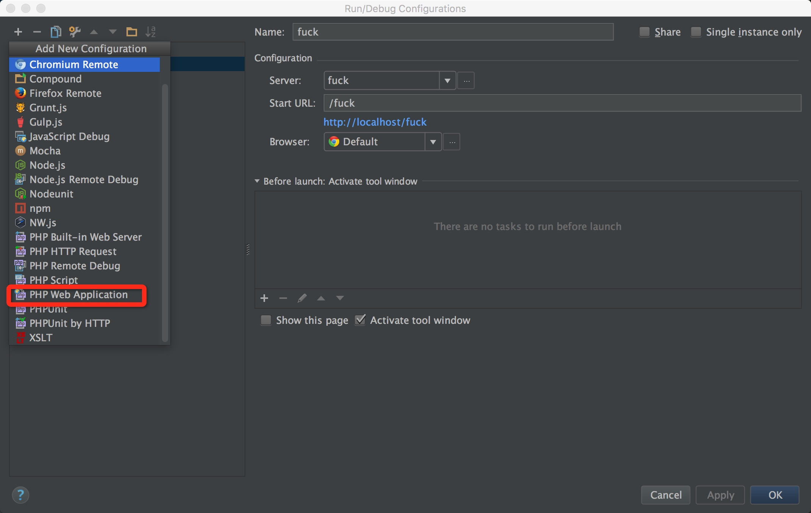
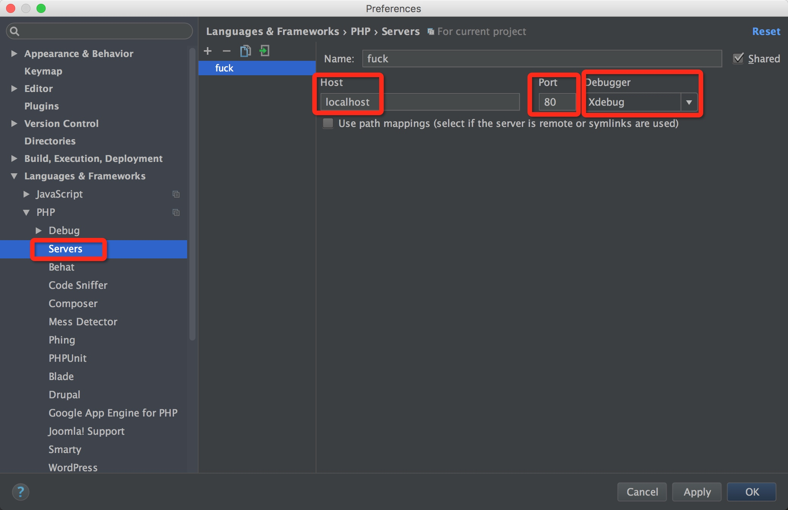
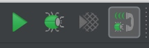

PHPStorm配置记录
MAMP 配置
PHP集成开发环境,不解释.

* 设置 Apache 端口为 : 80 / 443(SSL)
* 设置 MYSQL 端口为 : 3306

开启 Debugger.
 
编辑 php.ini 配置文件.修改端口.
PS : 其实默认就好.这样主要是确定一下. -_-!
然后自行确定xdebug是否开启成功.
PHPStorm XDebug 配置

改成跟刚才的配置文件一样.


随意创建一个 PHP Web Application.名字随便写,比如上图….起始地址一般是/根目录.懒得配 Apache,这里就写项目文件夹目录.浏览器用 Chrome.

新建一个server,名依旧随便写, Host 写 localhost 或者远程工程地址. 端口写 80.保存.

点开小虫子就可以开始调试了.
PHPStorm Prot 配置
PHPStorm进行网页调试的时候,默认是加端口号 63342 ,在配置本地php环境的时候默认端口不一定是 63342 这个,更多的是系统默认的端口号 80 ,那么问题就出现了.如何在PHPStorm中将 63342 端口改成 80 端口呢,修改的方法有两种.
在菜单栏的
Preferences下的Build , Execution , Deployment下的Debugger找到Built-in server port即可改变端口号,但这样更改会有一个问题,手动输入的端口数并不会被系统接受,由此会造成极大的不方便(这是哪个智障骚年设计的,你出来,我们谈谈哲学).通过修改PHPStorm的本地配置文件,也可以达到同样的效果,并且可以任意输入端口号.
首先我们要进入PHPStorm的mac配置文件路径:
/Users/admin/Library/Preferences/PHPStorm*/options
（打开Finder然后使用快捷键command+shift+g就会出现前往文件夹,将路径输入按回车就可以了.）
找找配置文件 other.xml , other.xml 的文件内容如下:
<application>
<component name="BuiltInServerOptions" builtInServerPort="63342" />
</application>
将PHPStorm配置文件改成如下即可:
<application>
<component name="BuiltInServerOptions" builtInServerPort="80" />
</application>
至此,终于可以愉快的用PHPStorm写PHP了.(到底是哪个智障少年设计的,给朕滚粗来.)